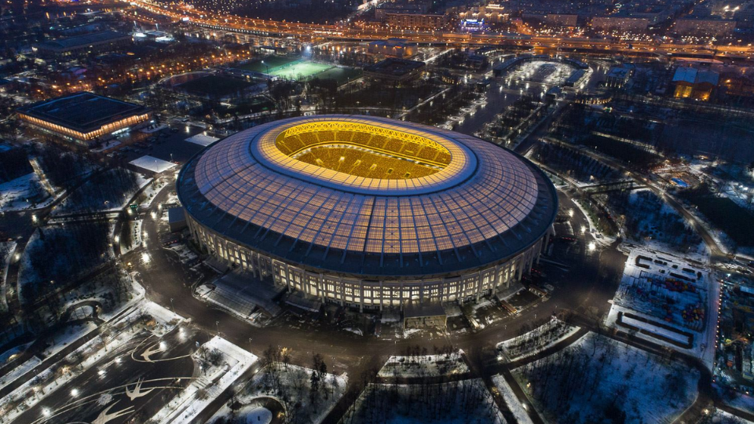
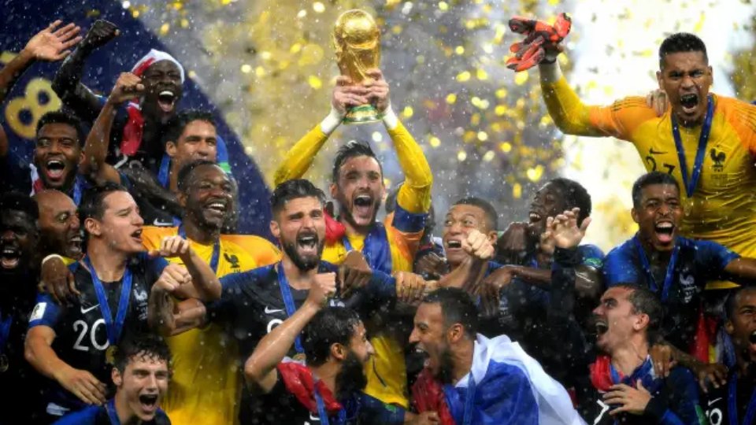

Quando a Copa do Mundo de 2018 foi realizada, o mundo vivia um período de crescente instabilidade geopolítica. As tensões entre Rússia e países ocidentais aumentavam desde a crise da Crimeia, em 2014, enquanto disputas comerciais entre Estados Unidos e China sinalizavam mudanças no equilíbrio econômico global. Ao mesmo tempo, o avanço das tecnologias digitais, da inteligência artificial, das redes sociais e dos serviços de streaming transformava a economia, a comunicação e o acesso à informação em escala mundial.
A Rússia, país-sede do torneio, era governada por Vladimir Putin e ocupava posição de destaque no cenário internacional como uma das principais potências militares e energéticas do planeta. Com aproximadamente 144 milhões de habitantes e um PIB em torno de US$ 1,7 trilhão, o país buscava reafirmar sua influência global após um período de tensões diplomáticas com Estados Unidos e União Europeia.
A realização da Copa foi utilizada como instrumento de projeção internacional, permitindo à Rússia apresentar uma imagem de modernidade, organização e capacidade tecnológica. O evento ocorreu em um contexto de sanções econômicas impostas por países ocidentais após a anexação da Crimeia, tornando-se também uma oportunidade para fortalecer sua presença diplomática e econômica no cenário global.


Os investimentos relacionados ao torneio ultrapassaram US$ 11 bilhões, sendo destinados à construção e modernização de estádios, ampliação de aeroportos, modernização de rodovias, sistemas ferroviários, telecomunicações e infraestrutura urbana. Diversas cidades russas receberam melhorias em mobilidade e serviços públicos para atender ao fluxo de turistas e delegações.
O legado da Copa de 2018 é considerado relativamente positivo. Os investimentos contribuíram para a modernização da infraestrutura de transporte e para o desenvolvimento de cidades fora dos tradicionais centros econômicos russos. Além disso, o torneio ampliou o turismo internacional e fortaleceu a imagem do país junto a milhões de visitantes. Contudo, alguns especialistas apontam que parte dos investimentos teve retorno econômico limitado e que determinados estádios enfrentaram dificuldades de utilização após o evento.
De forma geral, o principal legado da Copa de 2018 foi a projeção internacional da Rússia em um período de disputas geopolíticas e transformações na ordem mundial. O torneio demonstrou a capacidade do país de organizar um megaevento esportivo de alcance global e reforçou sua estratégia de utilizar o esporte como ferramenta de diplomacia e influência internacional.
A final foi disputada no Estádio Luzhniki, em Moscou, diante de aproximadamente 78 mil espectadores. A seleção da França conquistou seu segundo título mundial ao derrotar a Croácia por 4 a 2 em uma das finais mais movimentadas da história das Copas do Mundo.